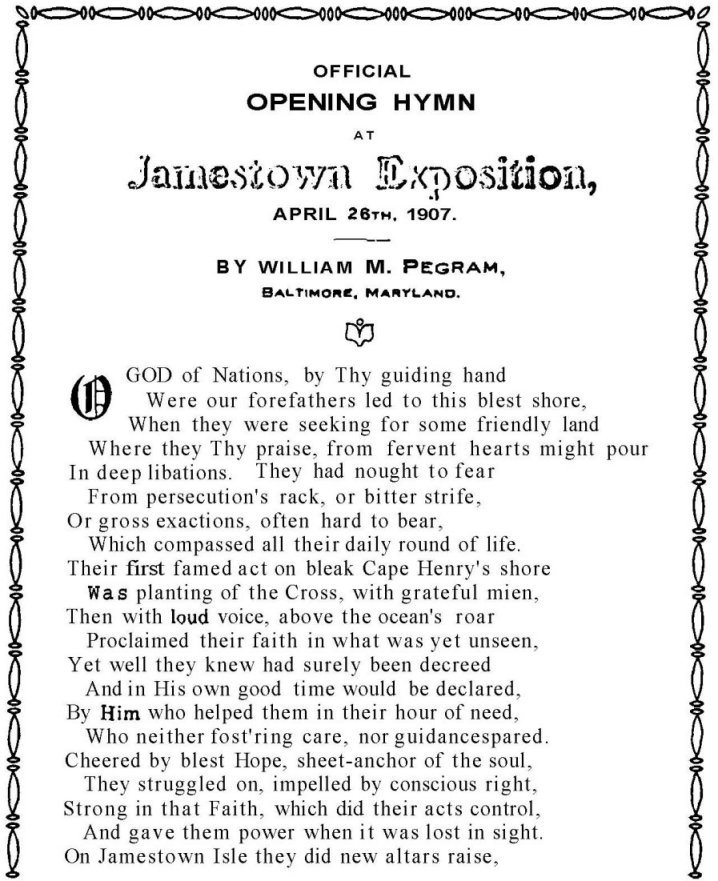
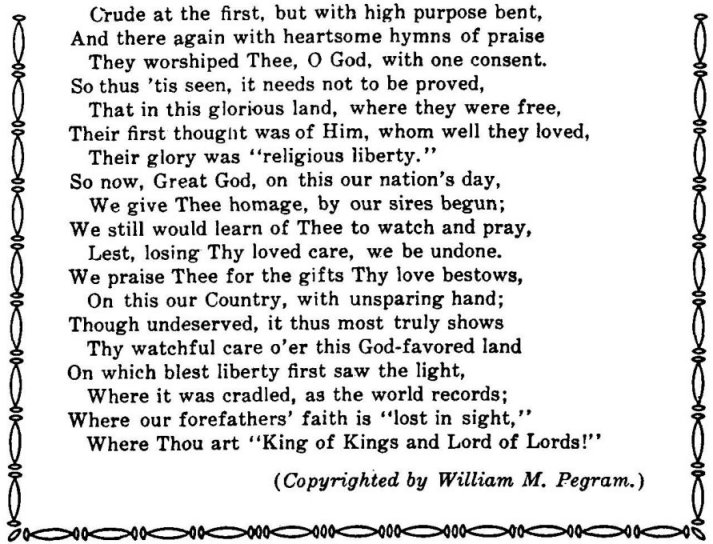
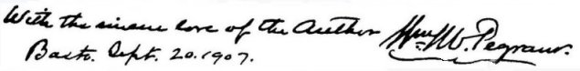

|
|
|||||||||
|
|
15 CAPTAIN JOHN PEGRAM4 AND DESCENDANTS JOHN PEGRAM4 (Edward3, Daniel2, George1), the fourth child of Edward Pegram3 and Mary Scott Baker, was born in Prince George County, likely in that portion that is now Dinwiddie County, Virginia, on 20 December 1748. There seems to be a paucity of information on John Pegram himself, but his descendants are rather well known. In Orders of Dinwiddie County of 17 August 1789 the following appears: Ordered that John Pegrarn be recommended to his excellency the Governor to be appointed Captain to the Company of Militia lately commanded by Baker Pegram, that Thomas Scott be recommended as a Lieutenant and Daniel Pegram an Ensign to the same. Baker Pegram, whom John replaced, was his younger brother, and Daniel was also his brother, and Edward's3 youngest child. On 1 December 1784 John Pegram signed a petition to the General Assembly to make Christianity the religion of the country (50, p. 71-72). At a court held for Dinwiddie County on 16 March 1835 . . . Capt. Joel Sturdivant certified that Martha Sturdivant, daughter of William Sturdivant Sr., married John Pegram4, by whom she had four children, EDWARD, JOHN, FRANCES and MARTHA. Martha married Stanfield Coleman, son of Capt. Williamson Coleman and Milliam Hardaway Coleman, and had one daughter and died intestate. Frances Pegram married Col. Isham E. Dabney, and afterwards Robert Lanier, but died intestate and without issue. (Certified by John Crews, Clerk of Dinwiddie County Court 3-19-1835) (147). It is not known why it was necessary to certify to the court, 20 years after John Pegram's death, that Martha Sturdivant married him. John Pegram died in 1814, when he would have been about 66 years of age (99). Tax records of Dinwiddie County show John as a land owner (42). He lived about seven miles from Petersburg in Dinwiddie County, and his family was known as "The Pegrams of Stoney Creek" (45). A resume of his descendants follow: MAJOR EDWARD PEGRAM5, son of John Pegram and Martha Sturdivant, was born 20 January 1772, and died 5 November 1814. He was in the war of 1812, and due to his gallantry and power in action was known as "Fighting Ned." He married his first cousin, Ann Lyle Pegram, daughter of Capt. Edward Pegram4 and Mary Lyle. She was born 6 August 1771 and died 26 January 1825. The home of Major Edward Pegram was known as "Edgefield", and was located in Dinwiddie County. Edward and Ann Lyle had 12 children as follows: BAKER6, MARTHA E., MARY A.L., MARY A.F., EDWIN, JOHN B., WILLIAM HENRY, EDWARD STRANGE, BENJAMIN H., and three who died in infancy. BAKER PEGRAM6, son of Edward Pegram and Ann Lyle Pegram, was born in Dinwiddie County, 3 November 1790, and died 1 February 1815. On 8 November 1810 he married Hannah Pearce, born 23 February 1792; and died 10 October 18 14. She was the daughter of Baldwin and Rebecca Pearce. Hannah was baptized 2 April 1792; Register of Bristol Parish (45). They had two children of record: GEORGE BALDWIN7, born 24 August 1811 and died 29 November 1832; and 84 EDWARD JAMES LAWRENCE, born 9 October 181 3 and died 28 May 1852. He left a wife and three children at Clinton, Louisiana. MARTHA E. PEGRAM6, daughter of Edward Pegram and Ann Lyle Pegram, was born 24 September 1792, and died 31 January 1793. MARY A. L. PEGRAM6, daughter of Edward Pegram and Ann Lyle Pegram, was born 20 November 1793 and died 20 July 1794. MARY ANN FRANCES PEGRAM6, daughter of Edward Pegram and Ann Lyle Pegram, was born in Dinwiddie County, 24 November 1795. She married Thomas Clarke of Petersburg in 1814 (1 38). In 18 30 she moved to Dayton, Alabama and died 9 September 1881. There were three children: MARTHA7, MARY JANE, and WILLIAM A. EDWIN P. PEGRAM, M.D.6, son of Edward Pegram and Ann Lyle Pegram, was born in Dinwiddie County 27 June 1798. He was a physician, and married Jane Wyche of Sussex County, Virginia. He died in Sussex County 29 September 1828, after which Jane married the Hon. Francis E. Rivers M. C. There was no issue. JOHN B. PEGRAM6, son of Edward Pegram and Ann Lyle Pegram, was born 30 October 1800 and died in March 1869. WILLIAM HENRY PEGRAM6, son of Edward Pegram and Ann Lyle Pegram, was born in Dinwiddie County 8 July 1803. He represented Sussex County in the Virginia Legislature, 1831-32. He was Magistrate and Presiding Justice, and an Elder in the Presbyterian Church. He married Caroline Matilda Anthony on 12 October 1824. She was born 10 March 1806 and died 11 February 1861. She was a native of Halifax County, North Carolina, but was reared by her sister in Sussex County, Virginia (45). William Henry Pegram died 27 November 1852 in Sussex County. There were four children, apparently a l born in Sussex County: MARTHA ELIZABETH PEGRAM7, daughter of William Henry Pegram and Caroline Anthony, born 24 August 1825 and died 11 January 1898. ANN PEGRAM7, daughter of William Henry and Caroline Anthony Pegram, was born 14 November 1829 and died 1 1 May 1830. BLAIR PEGRAM7, son of William Henry and Caroline Anthony Pegram, was born 8 December 1832, and died 19 January 19 16. He married Minerva Jane Wilson, 5 June 1855. They had two daughters:MARY WILSON PEGRAM8, born 1857, and married Thomas N. Jones. CAROLINE ANTHONY PEGRAM8, the second daughter of Blair Pegram and Minerva Jane Wilson, was born in 1860. She married Charles W. Warren (19). They had a son, WALKER PEGRAM9, who was born in 1895. This was the year in which Caroline Anthony Pegram Warren died, probably at child birth, at the age of thirty five. Walker Pegram Warren married Violet Norwood Lawson. He died in 1916. Bacons Castle in Surry County, Virginia is pictured in Historic Virginia Homes and Churches by Lancaster (l00), and it has the appearance of a Medieval European Castle, and concerns the life of Caroline Anthony Pegram. The following is quoted in relation to the castle: After passing through the hands of several other owners it was bought by Mr. William A. Warren, of Surry, who gave it to the present owner, his son, Mr. Charles Walker Warren, as a wedding gift. This seems most fitting, for the bride was Miss Pegram, daughter of Mr. Blair Pegram of Surry, and is related to the Allens, Cockes and other former owners of the old castle. (100). WILLIAM ANTHONY PEGRAM7, son of William Henry Pegram and Caroline Matilda Anthony, was born 29 August 1842, and died July 1863. He was killed in the Civil War in the Battle of Williamsport, Maryland. He never married. The eighth child6 of Edward Pegram and Ann Lyle Pegram apparently died in infancy. EDWARD STRANGE PEGRAM6, son of Edward Pegram and Ann Lyle Pegram, was born in Dinwiddie County 19 January 1808, and died 23 August 1888. He married Sarah 85 Raincock, on 3 February 1831. She was the
daughter of George C. Raincock and Rebecca P., of Norfolk, Virginia.
Sarah died 16 May 1852, and Edward Strange married Lucy M. Gilmore,
1 February 1854, at her home in Washington, D.C. She was the sister
of Governor Gilmore Edward Strange Pegram and Sarah Raincock had eight children (1 9, 45), presented below. VIRGINIA LYLE PEGRAM7 was born April 1833 and died 12 June 1833. WILLIAM MEADE PEGRAM7, son of Edward Strange Pegram and Sarah Raincock, was born in Norfolk, Virginia, 19 September 1837. He married Margaret W. Aldrick, daughter of Frances W. and Marie E. Aldrick of Baltimore, Maryland. He was in the Civil War, in the Army of Northern Virginia. He was commissioned a Captain by Secretary Benjamin in January 1862, and assigned to the recruiting service. He gave up his commission and joined the "Black Horse", 4th. Virginia Cavalry. He had three horses killed from under him, when he was wounded at Brandywine, 9 June 1863. Later he served at the Adjutant General's office at Cavalry Corps Headquarters, and he did staff duty for General J.E.B. Stewart. William Meade Pegram was a recognized poet, and published several volumes, including "Past Time", "Diagnosis" and other poems. He wrote the oficial hymn for the opening of the Jamestown Exposition, 26 April 1907. "If Major Pegram had written no other poem this alone would have entitled him to rank as one of America's poets"; wrote Susan Wright Pegram (45), Mrs. Robert Baker Pegram III, who knew William Meade Pegram, and considered his poetry as diversified as his life. He died in1926 at his home in Baltimore. His opening hymn of the Jamestown Exposition is appended:

86
 
The issue of William Meade Pegram7 and Margaret Aldrick follows: MARY ALDRICK PEGRAM8 was born 22 July 1860, probably in Baltimore. FRANCIS EDWARD PEGRAM8 was born 24 January 1866, likely in Baltimore. He married Ida Catherine Gary on 7 April 1897. They had a son, FRANCIS EDWARD JR.9, born about 1890, probably in Baltimore. SARAH FLETCHER PEGRAM7, daughter of Edward Strange Pegram and Sarah Raincock, was born 30 November 1839. MARY BEALL PEGRAM7, daughter of Edward Strange Pegram and Sarah Raincock, was born 11 November 1841. EDWARD STRANGE PEGRAM JR.7, son of Edward Strange and Sarah Raincock Pegram, was born 18 February 1844, and died 7 June 1848. GEORGE EDWARD PEGRAM7, son of Edward Strange Pegram and Sarah Raincock, was born 8 August 1845, in Richmond, Virginia. He married Lizziedelle Laurie in 1870 in Alabama. They had five childrens, two boys and three girls, the names of which are not known. ANNIE CLIFTON PEGRAM7, daughter of Edward Strange Pegram and Sarah Raincock, was born 11 July 1847 and died 5 June 1880. EDWARD STRANGE PEGRAM III7, son of Edward Strange and Sarah Raincock Pegram, was born 24 October 1851 and died 28 February 1852. It is sad that Edward Strange Pegram6 could not produce a namesake that lived. The tenth child6 of Major Edward Pegram and Ann Lyle Pegram was born 27 April 1810, and died the same day. BENJAMIN H. PEGRAM6, son of Major Edward Pegram and Ann Lyle Pegram, was born 20 March 1812 and died 28 July 1816. The twelfth child6 of Edward and Ann Lyle Pegram was born 16 November 1814 and died the same day. Many of their children died young, a tragedy of the day. MARTHA "PATSY" PEGRAM5, daughter of John Pegram and Martha Sturdivant, was born in Dinwiddie County, and married Stanfield Coleman, son of Capt. Williamson Coleman and Milliam Hardaway, and the brother of Martha Coleman, who married William Baker Pegram5, a first 87 cousin of Martha Pegram. Martha and Mr. Coleman lived in
Uniontown, Alabama. Martha died rather JOHN GEORGE PEGRAM COLEMAN6 married Mary P. Gregg, and
they had five
JOHN PEGRAM5, son of John Pegram and Martha Sturdivant, was born in Dinwiddie County, 13 April 1785. He died 3 July 1864, at his plantation home, "Woodlawn", in Dinwiddie County. He was known as Captain John, and as "Jack my Dandy", because of his fine manner of dressing. John's home "Woodlawn" was about five miles from Petersburg. It was a very fine house, and it was said that the "Yankees" instead of burning it, as was their custom, had it dismantled and shipped North, probably to grace the property of some "Yankee" General. All of the furniture and family records were lost. John was a large slave owner and freed 150, when freedom was granted by the United States Government (45). John married his first cousin once removed, Ann Scott, daughter of Rebecca Pegram5 and Peter Scott. Ann died without issue, and John married Martha Thweatt Goodwyn, on 14 February 1822, as recorded in his bible, copied by Robert L. Pegram (48). Martha was born 17 September 1794 and died 29 October 1863. There was one child, EDWARD OSCAR ESAU6. EDWARD OSCAR ESAU PEGRAM6, son of John Pegram and Martha Thweatt Goodwyn, was born at "Woodlawn", Dinwiddie County, 17 September 1830, and died 21 May 1889. He was buried at Smith Grove Church, in Grove Hill Cemetery, just south of "Woodlawn", in the northeastern part of Dinwiddie County. Edward Oscar Esau married Octavia Boisseau on 7 June 1859. She was born 25 May 1828, and was the daughter of William E. Boisseau and Julia Grigg of Dinwiddie. Edward and Octavia lived at "Woodlawn" and had issue (101):
JOHN WILLIAM7, b. 23 Oct. 1871; d. 9 Dec. 1924, m. Annie Electra Slate, b. 8 Dec. 1870; d. 12 June 1941; on 15 Feb. 1898. (Record of descendants from family bible of Virginia Pegram Short, copied by Robert L. Pegram) (48). ANNIE LAURA ELIZABETH8, b. 11 Nov. 1901; m. Charles Ivy Smith, 30 Nov. 1917; issue:
88 ELLEN OCTAVIA PEGRAM8, b. 5 Jan. 1905; m. Thomas E. Slater, 12 Jan 1949; lives Petersburg, Va. 1984. VIRGINIA FALCONER ELECTRA PEGRAM8, b. 1 Dec. 1907; m. Dabney Eppes Short, 15 Aug. 1936. He died 16 April 1973. They had: DABNEY EPPES JR.9, b. 5 July 1937; m. Nancy Minetree. BARBARA LOUISE, b. 20 May 1939; m. David Arnold McCanton, 17 Sept.1960. JOHN PEGRAM, b. 6 Sept. 1945; m. Joan Carolyn Underwood, 26 Feb.1966. BLANCHE PEGRAM7, daughter Edw. Oscar Esau, b. 29 Oct. 1874; d. 9 Nov.1874. JULIA THWEATT, b. 4 Dec. 1875; d. 20 July 1876. ANNIE YAGER, b. 27 June 1877; d. 25 April 1925. CHARLES OSCAR, b. 29 Oct. 1879; m. Emma Rowe Bland, 27 Jan. 1936. ARTHUR MEADE, b. 5 Oct. 1884; buried in Dinwiddie Co., likely Grove Hill Church.
Dinwiddie County, Virginia, Will Book 8, page 51. - I, John Pegram of the County of Dinwiddie in the State of Virginia, being of sound mind etc. . . . make this my last will and testament. 1st. I desire that all my past debts be paid. 2nd. I give to my wife, Martha T. Pegram, the plantation on which I now reside, known as Woodlawn, during her natural life, and then to my son Edward Oscar Esau and his heirs forever. 3rd.. I give to my beloved wife all the household and kitchen furniture and all of the plantation implements and utensils on the plantation, which I now reside, and also all of the stock of every kind and all of the crops thereon, whether growing or gathered, and all of the slaves thereon . . . and all of the slaves hired out in Petersburg, except Edgar, Munro, David and Maria, hereafter mentioned. 4th. I give to my son Edgar Oscar Esau Pegram the plantation lying in the counties of Greensville, Brunswick and Dinwiddie, known as the residence of the late Esau Goodwyn. I also give to my said son the slaves, Edgar, Munro and David. 5th. To John W. Goodwyn a girl by the name of Maria, and her increase, to be held in trust for the use and benefit of M.S. Goodwyn, his wife, during her natural life, and then to the children of J. W. and M.S. Goodwyn. . . . 6th. I appoint my wife Martha T. Pegram and my
son Edward Oscar Esau Pegram Executrix and Signed: Jno. Pegram, 12 June 1860 90 Witnesses: A. W. Boisseau
1. To my daughter in law, Octavia Pegram, a boy by the name of Charlie, also my gold watch as a memento of my affection for her. 2. I give to Miss Polly Jolly 1 bed and furniture. My request is that my son shall take care of Miss Jolly during her life. 3. To John Goodwyn a girl by the name of Maria and her increase . . . to be held in trust for the use and benefit of M.S. Goodwyn, his wife, for and during her natural life . . . then for the use and benefit of the children of said J.W. and M.S. Goodwyn. . . 4. I do hereby constitute and appoint my husband John Pegram my executor of this my last will and testament. . . . Signed: Martha Thweatt Pegram Witnesses: A. W. Boisseau "I Martha T. Pegram revoke the legacy I bequeathed
to Miss Polly Jolly and give the same to my Martha T. Pegram Witnesses: Same as above. FRANCES "FANNY" PEGRAM5, daughter of John Pegram and Martha Sturdivant, was born in Dinwiddie County. She first married Colonel Isham E. Dabney, and after his death she married Robert Lanier. She had at least one son, JOHN T. LANIER6. 91 |
| Back | Next | Index | Table of Contents | References | |